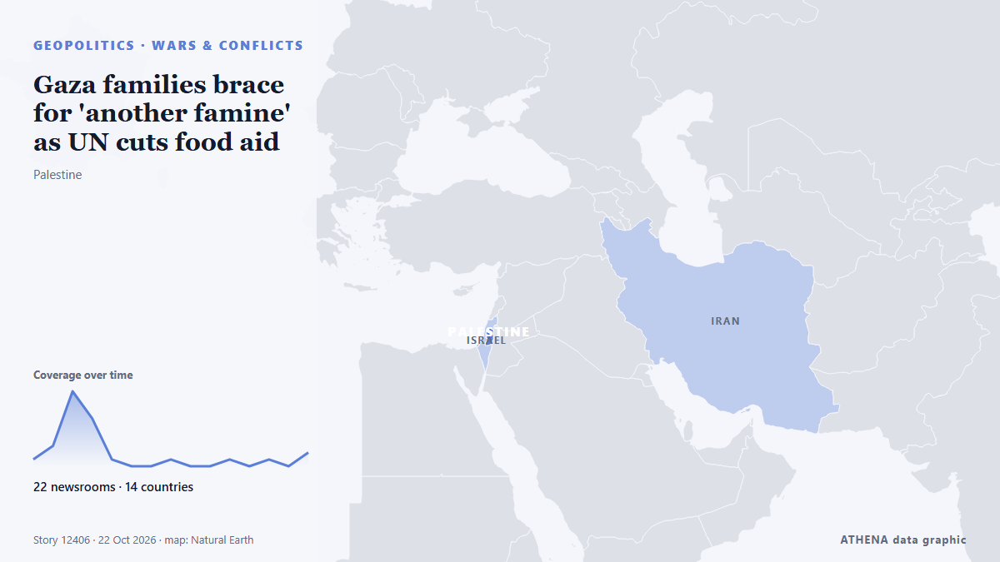

Gaza families brace for 'another famine' as UN cuts food aid

The UN's World Food Programme says 1.4 million people in Gaza are suffering acute food shortages and that funding gaps are forcing cutbacks in critical aid, despite the U.S. brokered Hamas-Israel… من NPR World
نشرته بشكل مستقل 22 مصدرًا في 14 دولة منذ 18 أكتوبر، وأول من نشره NPR World؛ والتغطية تتراجع. يقدّر ATHENA الخطر بأنه متزايد (5.0/10)، ويعود ذلك أساسًا إلى خطورة الضرر الموصوف ونطاقه الجغرافي والقطاعي. الثقة 89٪ (مرتفعة)، وعدد المصادر المستقلة المؤكِّدة: 22، بمتوسط موثوقية للمصادر يبلغ 78٪. وسائل الإعلام حسب البلد: الولايات المتحدة (3), المملكة المتحدة (3), الإمارات العربية المتحدة (3). التغطية: من 18 أكتوبر إلى 22 أكتوبر، 88 ساعة.
لماذا يهم: تتابع هذه الصفحة النزاع الذي يشمل إسرائيل وغزة والضفة الغربية ولبنان — التطورات العسكرية والوضع الإنساني والدبلوماسية — كما تغطيه وسائل الإعلام حول العالم.
ما الذي تغيّر: 3 تقارير جديدة من 3 غرف أخبار خلال 24 ساعة حتى 22 أكتوبر.
تُعرض العناوين بالإنجليزية كما نُشرت.
نظرة سريعة
اختير وقُيِّم وكُتب وفق منهجية ATHENA المنشورة. لا يتدخل أي محرر في الأحداث بعينها. كيف يُنتَج ›
| 18 Oct 21:00 UTC | 1 |
|---|---|
| 19 Oct 03:00 UTC | 3 |
| 19 Oct 09:00 UTC | 11 |
| 19 Oct 15:00 UTC | 7 |
| 19 Oct 21:00 UTC | 1 |
| 20 Oct 03:00 UTC | 0 |
| 20 Oct 09:00 UTC | 0 |
| 20 Oct 15:00 UTC | 1 |
| 20 Oct 21:00 UTC | 0 |
| 21 Oct 03:00 UTC | 0 |
| 21 Oct 09:00 UTC | 1 |
| 21 Oct 15:00 UTC | 0 |
| 21 Oct 21:00 UTC | 1 |
| 22 Oct 03:00 UTC | 0 |
| 22 Oct 09:00 UTC | 2 |
| 19 Oct 15:50 UTC | 4.5 |
|---|---|
| 19 Oct 18:57 UTC | 4.9 |
| 22 Oct 12:54 UTC | 5.0 |
لماذا هذه الأرقام
الأهمية
الخطر
الثقة
التغطية — من نشر الخبر ومتى
العنوان كما نُشر · يفتح الأصل- NPR World · الولايات المتحدة'Life is absolutely brutal in Gaza,' says World Food Programme head
- BBC News · المملكة المتحدةFunding shortages force World Food Programme to cut aid to Gaza
- The Straits Times · سنغافورةWorld Food Programme cuts aid to 500,000 Palestinians in Gaza, cites funding shortages
- Al-Monitor · الولايات المتحدةUN agency slashes Gaza food 'lifeline' over funding shortfall
- Mehr News (English) · إيران1.4 million Palestinians still acutely food insecure in Gaza
- The Guardian · المملكة المتحدةCuts force World Food Programme to end support for half a million Palestinians in Gaza
- Business Recorder · باكستانWorld Food Programme says ending aid for half million in Gaza due to funding shortfall
- Middle East Eye · INTWFP ending aid for half million in Gaza due to funding shortfall
- DW English · ألمانياUN food program cuts aid to 500,000 Palestinians in Gaza
- Middle East Eye · INTWorld Food Programme stops provision to half a million people in Gaza over lack of funding
- Middle East Eye · INTWorld Food Programme stops provision to half a million people in Gaza over lack of funding
- UN News · الولايات المتحدةGaza: Funding cuts leave half a million without food assistance
- Oman Observer · عُمانWFP cuts aid to 500,000 Palestinians in Gaza
- Sky News (World) · المملكة المتحدةUN cuts food aid to half a million Gazans over funding shortages
- Euronews English · فرنساUN food agency to cut aid to 500,000 people in Gaza as funding dries up
- Al Jazeera English · قطرFamine fears as aid cuts and shipment restrictions coincide in Gaza
- RTÉ News · أيرلنداWFP to cut Gaza aid for 500,000 amid funding crisis
- Al Jazeera English · قطرGaza faces worsening hunger as WFP announces food aid cuts
- Shafaq News (English) · العراقIsraeli attacks kill two, wound others across Gaza
- The National · الإمارات العربية المتحدةWorld Food Programme to cut aid to half a million people in Gaza amid funding shortfall
- Taipei Times · تايوانWFP cuts aid to 500,000 Palestinians as funds shrink
- The Daily Star — page reader · بنغلاديشFunding crisis: WFP cuts food aid to 500,000 in Gaza
- The New Arab · INTWorld Food Programme cuts aid to 500,000 Palestinians in Gaza
- The National · الإمارات العربية المتحدةGaza families fear losing their last lifeline after WFP aid cuts
- The New Arab · INTFamilies in Gaza fear return to hunger as WFP slashes food aid
- The National · الإمارات العربية المتحدةIsrael cannot secure lasting peace while Gaza remains in crisis
- Middle East Eye · INTGaza families brace for 'another famine' as UN cuts food aid
- Africanews (English) · AFRAs food assistance wanes, Palestinians face the prospect of hunger